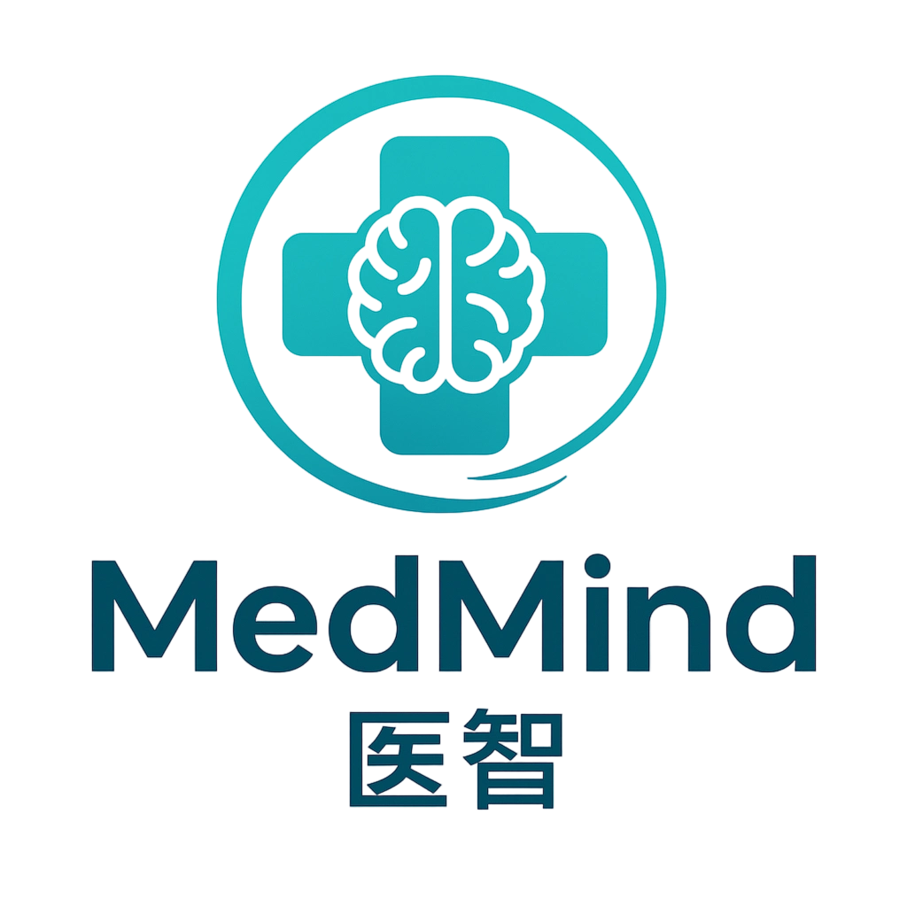
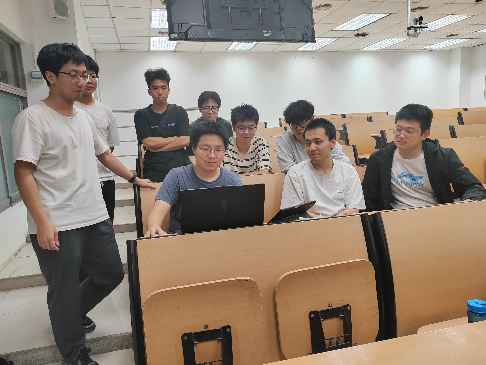
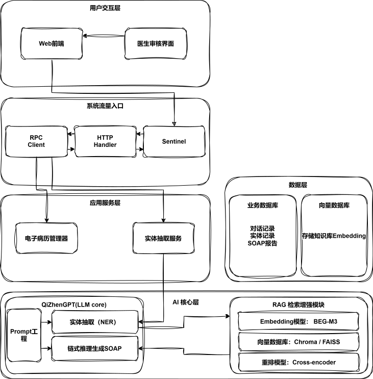
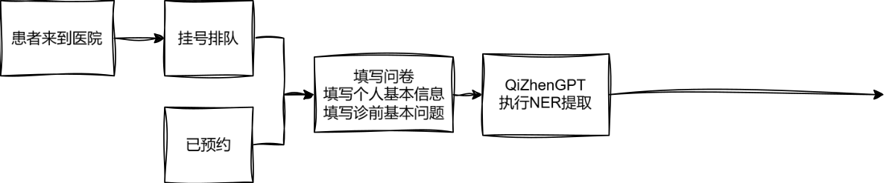
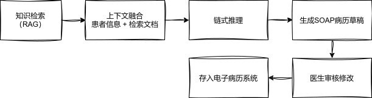
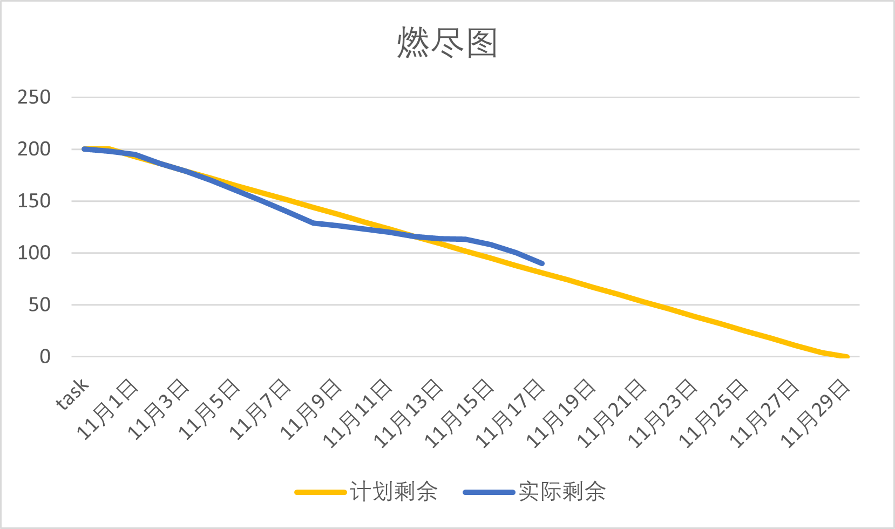

SE组-选题与需求分析报告
一、团队集结
1.1 组员介绍与任务分工
| 角色类别 | 姓名 | 学号 | 主要负责内容 | 说明 |
|---|---|---|---|---|
| 设计负责人 | 杨恪 | 052301319 | 界面与交互设计、问答原型、PPT展示 | 负责设计以及UI |
| 前端开发 | 江豪 | 052301237 | 问答界面实现、前后端接口联调 | 负责患者端界面 |
| 前端开发 | 刘昭 | 052306115 | 前端统筹，前端系统管理 | 负责前端统筹开发 |
| 前端开发 | 陈张钡 | 152301115 | 医生界面的设计 | 前端医生界面 |
| 后端负责人 | 周晨烁 | 052306116 | 后端架构、状态管理 | 后端主力 |
| 后端开发 | 王炜 | 152301212 | 医生端接口实现、性能优化 | 协助AI检索接入 |
| AI负责人 | 郑伟 | 022302217 | Prompt设计、NER抽取、RAG检索 | AI算法主导 |
| AI工程师 | 曾立臣 | 052301116 | 向量数据库构建与性能优化 | 检索增强模块 |
| AI工程师 | 郑圣杰 | 052301230 | gRPC流式通信 | AI对接 |
| 联调小组 | 周晨烁 × 郑伟 | —— | 系统集成、性能测试 | - |
1.2 团队特色描述
我们的团队是一支“AI驱动的全栈先锋队”。核心竞争力在于：我们不仅具备完整的前后端开发与设计能力，更拥有一名专职的AI工程师，能够将最前沿的大语言模型（LLM）技术深度融合到产品中，实现真正的智能化。相比于传统的增删改查系统，我们能创造出具有更高技术壁垒和更优用户体验的智能应用。
1.3 团队Logo及设计理念
Logo设计理念：
- 以蓝绿色医疗十字为主形，中心融合大脑符号，象征“人工智能助医”；
- 外围环形线条代表AI思维与信息循环流转，寓意“智能问诊的闭环与安全信任”。
- 字体采用圆角无衬线风格，传达“科技、温度、专业”的品牌精神。
颜色寓意：
蓝色代表理性与信任；
绿色象征健康与生命力；
白色象征纯净与安全。

1.4 团队合照

二、开始行动
2.1 项目背景与价值
项目名称
基于LLM智能体的医院预诊系统（安心医助 / 医智 / MedMind）
背景与痛点
在当前医疗体系中，“排队时间长、看病时间短” 已成为普遍问题。医生在有限的时间内，需要反复采集患者的主诉与病史信息，导致：
- 医生工作负荷高，初诊效率低；
- 患者描述不规范，关键信息容易遗漏；
- 医患交流效率低，诊断质量受到影响。
这种模式既增加了医生的压力，也降低了患者的就诊体验。因此，亟需一种智能化的信息采集与辅助诊断系统，在医生面诊前就能高效获取关键信息。
应用价值
对医院 / 科室：
- 显著提升问诊效率，减少重复性劳动；
- 降低人力与时间成本；
- 沉淀结构化、标准化的医疗数据，为后续智能诊疗打下基础。
对医生：
- 减少重复问询，让医生将更多时间用于真正的诊断与治疗；
- 借助AI生成的结构化报告，快速掌握患者病情要点。
对患者：
- 体验更顺畅的就诊流程；
- 信息填写更智能、引导更清晰；
- 获得医生更精准的诊前判断。
社会价值
- 优化医疗资源配置，缓解“看病难”问题；
- 改善医患关系，提高沟通透明度；
- 推动智慧医疗体系建设，为未来智能医院提供落地范例。
预期目标
本项目计划开发一个 MVP（最小可行产品），核心目标如下：
- 实现患者端智能信息采集 —— 通过自然语言输入完成病情描述；
- AI智能体生成标准化预诊报告 —— 自动整理关键病史与症状；
- 医生端报告审核与追问闭环 —— 医生可根据AI报告提出追问或终结诊前流程；
- 量化目标：让医生有效诊断时间占比提升 50%，实现“医生更高效、患者更满意”的双赢局面。
2.2 团队贡献分计算方式
我们团队坚决反对”大锅饭“，参考《构建之法》第五章和第十七章的精神，我们设计了一套结合了任务量与个人表现的动态贡献分计算方法：
个人总贡献分 =（A. 任务基础分 + B. 额外奖励分 - C. 特殊扣分）
A. 任务基础分 (Task Points)：
项目开始时，我们将所有功能拆分为带有难度系数（1-8分）的任务卡。每周例会时，根据成员完成的任务卡累加其基础分。此分数直接填入每周的贡献度表格。
B. 额外奖励分 (Bonus Points)：
用于奖励超出本职工作的贡献，如：解决重大技术难题 (+10分)，提出创新性想法 (+8分)，积极帮助他人 (+5分)等。奖励分需由全体组员投票认可后发放。
C.特殊扣分 (Penalty Points)：
任务严重逾期：自己负责的任务没有按时完成，并且影响了其他同学的进度。
代码质量警告：提交的代码或文档质量太差，需要别人花很多时间来修改。
这个机制确保了多劳多得，鼓励了团队协作，并有明确的记录可以追溯，符合作业要求。
**三、点滴记录 **
3.1 思维导图与燃尽图
- 项目思维导图：

项目核心业务流程：


燃尽图：

3.2 UML设计文档
Part 1: 患者端模块 UML 图
 图 1: 用例图
图 1: 用例图
 图 2: 类图
图 2: 类图
 图 3: 活动图
图 3: 活动图
 图 4: 状态图
图 4: 状态图
 图 5: ER图
图 5: ER图
Part 2: 医生端模块 UML 图
 图 1: 用例图
图 1: 用例图
 图 2: 类图
图 2: 类图
 图 3: 活动图
图 3: 活动图
 图 4: 状态图
图 4: 状态图
 图 5: ER图
图 5: ER图
Part 3: 后端服务模块 UML 图
 图 1: 用例图
图 1: 用例图
 图 2: 类图
图 2: 类图
 图 3: 活动图
图 3: 活动图
 图 4: 状态图
图 4: 状态图
 图 5: ER图
图 5: ER图
Part 4: 系统集成模块 UML 图
 图 1: 用例图
图 1: 用例图
 图 2: 类图
图 2: 类图
 图 3: 活动图
图 3: 活动图
 图 4: 状态图
图 4: 状态图
 图 5: ER图
图 5: ER图
3.3 团队进度表
团队进度表
| 阶段 | 任务描述 | 负责人 | 状态 | 预计完成时间 |
|---|---|---|---|---|
| 需求分析 | 选题与需求分析 | 全体团队 | 已完成 | 2025-11-05 |
| 设计 | 架构设计与方案明确 | 设计小组 | 已完成 | 2025-11-06 |
| 前端原型 | 前端原型制作 | 前端小组 | 已完成 | 2025-11-07 |
| 后端开发 | 后端基本开发 | 后端小组 | 已完成 | 2025-11-20 |
| 接口文档 | 接口文档编写 | 后端小组 | 已完成 | 2025-11-21 |
| AI集成 | 收集信息并集成AI | AI小组 | 进行中 | 2025-11-25 |
| 测试 | 功能测试 | 联调小组 | 待开始 | 2025-11-30 |
| 联调 | 系统联调 | 联调小组 | 待开始 | 2025-12-05 |
3.4 心得体会
UML工具选择的原因和使用体验
在本次软件工程实践中，我们选择了PlantUML作为主要的UML建模工具。这一选择主要基于以下原因：首先，PlantUML是一种基于文本的UML工具，能够通过简单的代码描述生成各种图表，如用例图、类图、活动图、状态图和ER图等，这使得图表的版本控制和协作变得极为便捷，尤其适合团队开发环境。其次，PlantUML支持多种输出格式，包括SVG和PNG，能够无缝集成到Markdown报告中，符合我们项目文档化的需求。此外，作为开源工具，它免费且社区活跃，提供了丰富的插件和扩展功能。
使用体验方面，PlantUML的学习曲线相对平缓，通过简单的语法规则，我们能够快速上手。例如，在绘制用例图时，只需用简单的文本描述参与者和用例关系，即可生成清晰的图表。在项目中，我们利用PlantUML生成了多个阶段的UML图表，包括需求分析阶段的用例图和类图，以及设计阶段的活动图和状态图。这些图表不仅帮助我们可视化系统架构，还促进了团队成员之间的沟通。
项目中遇到的困难及解决方法
在开发基于LLM智能体的医院预诊系统的过程中，我们遇到了多个技术和管理上的困难。首先，在AI集成方面，LLM模型的调用和响应处理较为复杂。由于我们使用的是外部API接口，网络延迟和API限制（如速率限制）导致了预诊响应的不稳定性。为解决这一问题，我们采用了异步处理机制，通过引入消息队列（如RabbitMQ）来缓冲请求，并实现了重试逻辑和缓存策略，以提高系统的鲁棒性。此外，我们还设计了降级方案，当API不可用时，系统自动切换到基于规则的简单预诊模式。
其次，在团队协作中，跨小组的沟通障碍是一个显著问题。例如，前端小组在实现用户界面时，需要频繁与后端小组对接API接口，但由于分工明确，初期缺乏统一的接口文档，导致了多次返工。为此，我们引入了APIfox工具来同步制作API文档，并建立了定期的联调会议，确保各小组的进度同步
团队协作经验和个人收获
本次项目采用了多人小组的分工模式，包括设计、前端、后端、AI和联调小组，这种分工有助于专业化但也强调了协作的重要性。在协作过程中，我们通过GitHub进行代码管理，使用Issues和Pull Requests来跟踪任务和审查代码，这不仅提高了代码质量，还培养了我们的版本控制技能。联调小组扮演了桥梁角色，负责协调各小组的集成测试，确保系统的整体一致性。
个人而言，我主要负责前端原型制作、各类汇报文件的制作和撰写、协调监督组员的工作和一些杂务。通过这次实践，我深刻体会到团队协作的艺术。例如，在制作前端原型时，需要与设计和前端开发小组密切配合，确保原型准确传达需求，这让我学会了跨角色沟通的重要性。此外，撰写各类汇报文件锻炼了我的文档化能力和表达技巧，使我能够清晰地呈现项目进展和成果。协调监督组员的工作则培养了我的组织能力和责任感，通过定期检查进度和解决问题，确保团队高效运作。收获最大的是综合能力的提升，不仅巩固了原型设计和文档写作技能，还增强了项目管理经验，这为未来的团队领导角色奠定了基础。同时，面对协调中的挑战和杂务处理的琐碎，也提高了我的耐心和细致度。
对软件工程实践的体会和未来改进建议
通过本次软件工程实践，我对软件开发的全生命周期有了更深刻的体会。需求分析阶段的严谨性直接影响后续设计的质量，而迭代开发则强调了灵活性和反馈的重要性。UML建模作为可视化工具，不仅帮助我们理清思路，还促进了非技术人员的参与，如在医院场景中，与潜在用户的讨论用例图有助于捕捉真实需求。此外，团队协作的成功依赖于有效的沟通工具和流程，如定期会议和文档共享，这在远程协作的时代尤为关键。
成员周贡献表
| 周次 | 成员 | 贡献内容 |
|---|---|---|
| 第1周（11月1-7） | 杨恪 | 参与需求分析，完成首次汇报ppt制作和架构图流程图绘制，完成前端界面原型设计 |
| 第1周（11月1-7） | 江豪 | 参与需求分析 |
| 第1周（11月1-7） | 周晨烁 | 确认后端及AI具体技术路线，完成汇报工作 |
| 第1周（11月1-7） | 郑伟 | 确认后端及AI具体技术路线，完成汇报工作 |
| 第1周（11月1-7） | 王炜 | 参与需求分析 |
| 第1周（11月1-7） | 曾立臣 | 参与需求分析 |
| 第1周（11月1-7） | 刘昭 | 参与需求分析 |
| 第1周（11月1-7） | 陈张钡 | 参与需求分析 |
| 第1周（11月1-7） | 郑圣杰 | 参与需求分析 |
| 第2周（11月8-14） | 王炜 | 参与后端接口开发 |
| 第2周（11月8-14） | 曾立臣 | 参与AI数据收集 |
| 第3周（11月15-21） | 郑伟 | 完成接口文档 |
| 第3周（11月15-21） | 周晨烁 | 完成接口文档 |
| 第3周（11月15-21） | 王炜 | 完成短片拍摄和剪辑 |
| 第3周（11月15-21） | 曾立臣 | 完成短片拍摄和剪辑 |
| 第3周（11月15-21） | 刘昭 | 参与AI集成 |
| 第3周（11月15-21） | 陈张钡 | 参与AI集成 |
| 第3周（11月15-21） | 郑圣杰 | 参与测试和联调 |
| 第3周（11月15-21） | 江豪 | 参与测试和联调 |
| 第3周（11月15-21） | 杨恪 | 完成短片拍摄和剪辑，11月18号完成报告和博客编写 |